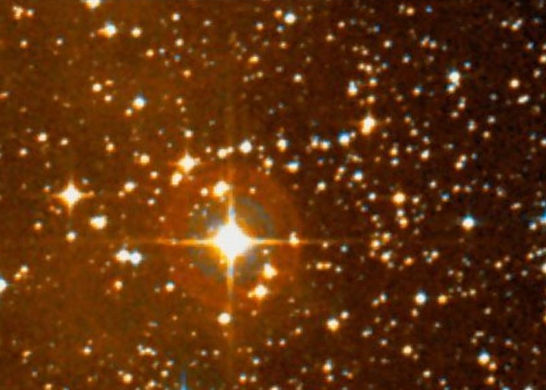
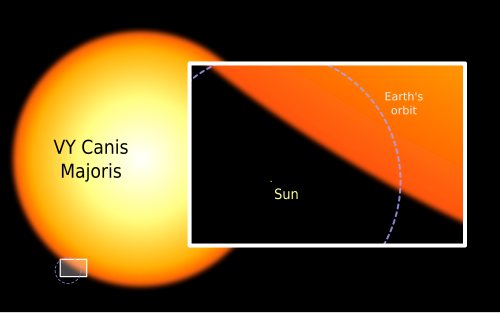
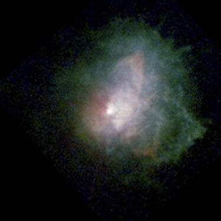

VY Canis Majoris
VY Canis Majoris (VY CMa) é uma estrela hipergigante vermelha localizada na constelação de Canis Major. Já foi considerada a maior estrela encontrada. Atualmente compõe o grupo de maiores estrelas conhecidas, com um raio de aproximadamente 1 420 raios solares.
História de observação
O primeiro registro conhecido de VY Canis Majoris é do catálogo estelar de Jérôme Lalande, em uma observação de 7 de março de 1801, que a lista como uma estrela de sétima magnitude. Outras medições de sua magnitude aparente ao longo do século XIX mostram que o brilho da estrela está diminuindo desde 1850. Desde 1847, VY Canis Majoris tem sido descrita como uma estrela avermelhada. Durante o século XIX, observadores encontraram pelo menos seis componentes distintos, sugerindo que a estrela pode ser múltipla. Atualmente sabe-se que esses componentes distintos são áreas brilhantes na nebulosidade ao redor da estrela. Observações visuais em 1957 e 1998 mostraram que VY Canis Majoris não possui estrelas companheiras.
O brilho variável de VY Canis Majoris foi primeiramente identificado em 1931 quando a estrela foi listada como uma variável de longo período com uma magnitude fotográfica na faixa de 9,5–11,5. Em 1939, ela recebeu a designação de estrela variável VY Canis Majoris.
Espectro
O espectro de VY Canis Majoris é o de uma estrela luminosa de classe M. As linhas de hidrogênio apresentam um perfil P Cygni. O espectro é dominado por bandas de TiO com intensidade que sugere uma classificação de M5. A linha Ha não é vista e existem linhas de emissão incomuns de sódio e cálcio neutros. A classe de luminosidade determinada de diferentes linhas espectrais varia entre gigante luminosa (II) e supergigante luminosa (Ia), com um classificação média de M5Ibp. As tentativas iniciais de classificação foram atrapalhadas pela interpretação da nebulosidade como estrelas companheiras.
A classe espectral obtida depende da característica espectral examinada, muitas das quais variam com o tempo. A estrela tem sido sempre considerada mais fria que M2, e é geralmente classificada entre M3 e M4. As classes de temperatura mais extremas já dadas são M2.5 e M7.[11] A temperatura efetiva obtida diretamente do raio e luminosidade corresponde a uma classe espectral de M4.
Distância
Em 1976, foi publicada a descoberta de uma nuvem molecular 15 minutos de arco a leste de VY Canis Majoris. A borda da nuvem possui uma estrutura brilhante que parece ser ionizada pelas estrelas do aglomerado estelar NGC 2362, indicando que o aglomerado e a nuvem estão à mesma distância, que foi estimada em 1,5 ± 0,5 kpc por observação do diagrama cor-magnitude do aglomerado. VY Canis Majoris parece estar situada na ponta da estrutura brilhante e tem uma velocidade similar à da nuvem e do aglomerado, portanto também está a essa distância,[12] que foi por muito tempo adotada como a distância da estrela.[5] Uma medição mais recente da distância a NGC 2362 estimou um valor de 1,2 kpc.
Distâncias estelares podem ser calculadas a partir da observação de paralaxe conforme a Terra orbita o Sol, mas VY Canis Majoris tem uma paralaxe muito pequena e observações visuais típicas como as dos satélites Hipparcos e Gaia têm uma margem de erro grande demais para estrelas supergigantes com envelopes circunstelares estendidos. No entanto, observações astrométricas precisas usando interferometria de longa linha de base conseguem medir a paralaxe da estrela com alta precisão a partir da observação de masers. Em 2008, observações de masers de H2O pelo interferômetro VERA, do Observatório Astronômico Nacional do Japão, detectaram uma paralaxe de 0,88 ± 0,08 milissegundos de arco, correspondendo a uma distância precisa de 1,14+0,11−0,09 kpc.[14] Em 2012, medições de masers de SiO pelo interferômetro Very Long Baseline Array confirmaram independentemente essa distância, determinando um valor de 1,20+0,13−0,10 kpc.
No segundo lançamento do catálogo Gaia, VY Canis Majoris possui uma paralaxe negativa de -5,92 ± 0,83 mas, que não possui significado físico.
Propriedades
VY Canis Majoris é uma estrela de classe M de alta luminosidade com uma baixa temperatura efetiva de menos de 4 000 K, o que significa que é uma estrela evoluída que está no canto superior direito do diagrama de Hertzsprung-Russell. Durante sua fase de sequência principal, provavelmente era uma estrela de classe O[12] com uma massa de 25 ± 10 M☉ (massa atual de 15 M☉), considerando os efeitos de rotação, ou possivelmente 32 M☉ (massa atual 19 M☉) para uma estrela sem rotação.[2] VY Canis Majoris tem uma taxa de perda de massa alta estimada em cerca de 6×10−4 M☉ por ano, conforme evidenciado pelo extenso envelope circunstelar. Esse é um valor médio, e a taxa de perda de massa provavelmente ultrapassou 10−3 M☉ por ano nos eventos de perda de massa mais violentos.
luminosidade
A luminosidade de VY Canis Majoris pode ser determinada diretamente a partir do fluxo bolométrico da estrela (a energia total irradiada pela estrela ao longo de todo o espectro), que foi determinado a partir de fotometria em várias bandas visíveis e infravermelhas, e da distância, conhecida por medições de paralaxe. O valor calculado é de cerca de 270 000 L☉, com uma margem de erro relativamente pequena de 40 000 L☉, causada principalmente pela incerteza na distância.[2] A maior parte da luminosidade da estrela é emitida como radiação infravermelha, com um máximo de emissão em 5–10 µm, o que é em parte causado por reprocessamento da radiação pela poeira da nebulosa circunstelar.
Estudos anteriores, baseados na distância antiga de 1,5 kpc, resultavam em uma luminosidade maior de 400 000 – 500 000 L☉, muito próxima do limite de Hayashi, o limite máximo de luminosidade que uma estrela em equilíbrio pode ter.[4][17] A maioria das estimativas antigas de luminosidade são consistentes com as atuais, se re-escaladas para a distância de 1,2 kpc.
Um estudo de 2006, com base em uma estimativa maior para a temperatura da estrela, estimou para VY Canis Majoris uma luminosidade significativamente menor de apenas 60 000 L☉, o que a tornaria apenas uma supergigante vermelha típica.[18] No entanto, esse valor não está de acordo com muitas das propriedades observadas da estrela, como a alta taxa de perda de massa, e a metodologia desse estudo foi contestada, já que ele ignorou os efeitos da poeira circunstelar no fluxo observado da estrela.
Tamanho
A determinação do raio de VY Canis Majoris é complicada pelo extenso envelope circunstelar da estrela. Em 2004, observações da estrela por interferometria no infravermelho (banda K – 2,2 µm) determinaram um diâmetro angular de 18,7 ± 0,5 mas,[19] correspondendo a um raio de 2 400 R☉ a uma distância de 1,2 kpc. Esse valor, no entanto, provavelmente não corresponde ao raio fotosférico da estrela, devido a contaminação por poeira circunstelar.[2][4][17] Em 2006, a partir do valor antigo da luminosidade da estrela, e usando uma temperatura efetiva estimada com base em um tipo espectral de M3–M4, o raio efetivo da estrela foi calculado em 1 800 – 2 100 R☉,[4][17] o que tornaria esta a maior estrela conhecida por tamanho. Um estudo de 2012, usando observações interferométricas pelo Very Large Telescope na faixa de 2,20–2,25 µm, determinou um diâmetro angular de 11,3 ± 0,3 mas, correspondendo a um raio estelar de 1 420 ± 120 R☉. A alta resolução espectral dessas observações permitiu minimizar o efeito de contaminação pelas camadas circunstelares, mas ainda é possível que esse valor seja um pouco maior que o tamanho real da estrela.
Nebulosa Circundante
VY Canis Majoris é cercada por uma extensa nebulosa formada por material expelido da estrela, medindo cerca de 10 segundos de arco de extensão. Observações pelo instrumento WFPC2 no Telescópio Espacial Hubble revelaram que a nebulosa é assimétrica e possui uma estrutura complexa, com filamentos e arcos distribuídos de forma aparentemente aleatória ao redor da estrela obscurecida. Essa estrutura é resultado de múltiplos eventos assimétricos de perda de massa nos últimos mil anos, causados provavelmente por intensa convecção nas camadas externas da estrela associada a campos magnéticos, de forma análoga a ejeções coronais no Sol mas em uma escala muito maior.